Unit 8. Linear Optimization
Table of Contents
- 1. Airline Revenue Management: An Introduction to Linear Optimization
- 1.1. Video 1: Introduction
- 1.2. Video 2: A Single Flight
- 1.3. Quick Question (2 points possible)
- 1.4. Video 3: The Problem Formulation
- 1.5. Quick Question (2 points possible)
- 1.6. Video 4: Solving the Problem
- 1.7. Quick Question (2 points possible)
- 1.8. Video 5: Visualizing the Problem
- 1.9. Quick Question (2 points possible)
- 1.10. Video 6: Sensitivity Analysis
- 1.11. Quick Question (1 point possible)
- 1.12. Video 7: Connecting Flights
- 1.13. Video 7: Connecting Flights
- 1.14. Quick Question (2 points possible)
- 1.15. Video 8: The Edge of Revenue Management
- 1.16. Optimization with R
- 2. Radiation Therapy: An Application of Linear Optimization
- 2.1. Video 1: Introduction
- 2.2. Quick Question (1 point possible)
- 2.3. Video 2: An Optimization Problem
- 2.4. Quick Question (2 points possible)
- 2.5. Video 3: Solving the Problem
- 2.6. Quick Question (1 point possible)
- 2.7. Video 4: A Head and Neck Case
- 2.8. Quick Question (1 point possible)
- 2.9. Video 5: Sensitivity Analysis
- 2.10. Quick Question (2 points possible)
- 2.11. Video 6: The Analytics Edge
- 3. Google AdWords: Optimizing Online Advertising (Recitation)
The Unit 8 for the topics of Linear Optimization.
1 Airline Revenue Management: An Introduction to Linear Optimization
1.1 Video 1: Introduction
We will introduce linear optimization and apply it to airline revenue management. Air transportation became a reality in the United States in the 20th century.
From 1938 to 1978, the Civil Aeronautics Board set fares, routes, and schedules for all interstate air transport.
Most airlines were very positive on this system, as it guaranteed their profits. However, this system led to higher costs for a traveling public as well as to various inefficiencies.
For example, applications for new routes and fares were often delayed or dismissed.
In response to these inefficiencies, the administration of President Carter passed the Airline Deregulation Act in 1978. The act encouraged more competition. As a result, 52 new airlines were formed between 1980 and 2000.
More competition led to lower fares, as we discussed, while meeting operating costs. This further led to heavy losses by air carriers.
So it is natural to ask how did airlines compete? In their attempt to sell more seats, airlines started to offer deep discounts. For example, on January 17, 1985, American Airlines launched its Ultimate Super Saver fares to compete with PeopleExpress.
The key strategy involved selling enough seats to cover fixed operating costs while selling remaining seats at higher rates to maximize revenues.
This led to the science of revenue management that we will study.
The key question in revenue management is how many seats to sell on discount. The key consideration is that passengers have different valuations. For example, business people value flexibility, whereas people seeking a vacation value good deals. So if we sell too many discounted seats, then there would not be enough seats for high-paying passengers.
At the same time, if we sell too few discounted seats, then we will have empty seats, which lead to lost revenue.
So the key question is how airlines like American can allocate their seats among customers in order to maximize their revenue.

1.2 Video 2: A Single Flight
To illustrate how linear optimization works in revenue management, let us consider a simple example: A flight from New York to Los Angeles.
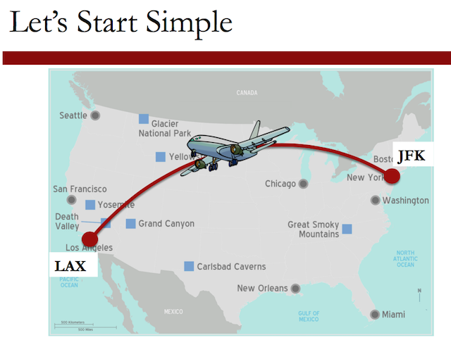
In this flight, there are two types of economy fares, Early Bird fares that cost $238, and Last Minute fares that cost $617.
In this flight, a Boeing 757 is used that has 166 economy seats.
Demand for these prices has been forecasted using analytics tools, looking at historical data and incorporating models like time series or linear regression.
Clearly, forecasts have errors, and therefore, we need to assess the sensitivity of our decisions to these errors.
To illustrate the use of linear optimization, we assume that demand has already been forecasted.
We'll illustrate how our decisions on how many discount seats to sell vary as the demand forecasts vary. If the demand for regular seats is 50, and for discounted fares is 150, and the capacity is 166 seats, then the optimal allocation is going to be to sell the 50 seats to satisfy the regular demand, and then we allocate the remaining 116 seats to the discounted fare class.
If the regular demand increases to 100 seats, then we allocate these 100 seats to these customers, and only 66 seats to discounted fare customers.
Finally, if the regular demand increases to 200, then we allocate all of our capacity, 166 seats, to these customers.
While this seems simple, what happens if we have 100 flights with connections in tens of fares? We'll next see how to formulate the problem mathematically and solve it in a systematic way, using linear optimization.

1.3 Quick Question (2 points possible)
Suppose that, as in the previous video, regular seats cost $617 and discount seats cost $238. We are selling 166 seats. The demand for regular seats is 150 and the demand for discount seats is 150.
1.3.1 Question a
How many discount seats should we sell?
writeLines("\n :: How many discount seats we should sell?") regularDemand <- 150 fullCapacity <- 166 discountSeats <- fullCapacity - regularDemand discountSeats
:: How many discount seats we should sell? [1] 16
1.3.1.1 Answer
The available discount seats are \(16\).
1.3.2 Question b
What would our total revenue be, for both regular and discount seats, assuming that we have a full plane?
writeLines("\n :: The total revenue is:") regularPrice <- 617.0 discountPrice <- 238.0 totalRevenue <- (regularDemand * regularPrice) + (discountSeats * discountPrice) totalRevenue
:: The total revenue is: [1] 96358
1.3.2.1 Answer
Explanation
We would sell 150 seats to regular customers, giving us a revenue of
$617*150, and 16 seats to discount customers, giving us a revenue of
$238*16. Our total revenue would be $617*150 + $238*16 = $96,358.
1.4 Video 3: The Problem Formulation
For a single route example, our problem is to find the optimal number of discount seats and regular seats to sell to maximize revenue. We'll assume that the price of regular seats is $617, and the price of discount seats is $238. Also, let's assume that we forecasted the demand of regular seats to be 100, and the demand of discount seats to be 150.
The capacity of our airplane is 166 seats.
Let's go ahead and formulate this mathematically as a linear optimization problem.
The first step is to decide what our decisions are, or the variables in our model. We need to decide how many regular seats we went to sell. We'll call the number of regular seats we sell R. We also need to decide the number of discount seats we want to sell. We'll call the number of discount seats we sell D.
The second step is to decide what our objective, or our goal, is. In this case, it's to maximize the total revenue to the airline. The revenue from each type of seat is equal to the number of that type of seat sold times the seat price.
In the case of regular seats, this is $617 times R, the number of regular seats we sell. And for discount seats, this is $230 times D, the number of discount seats we sell.
We sum these together to get the total revenue, and our objective is to maximize this sum.
The third step is to define the constraints, or limits, of our decisions. One constraint is that American Airlines can't sell more seats than the aircraft capacity, which is 166 seats. So the total number of seats sold, R + D has to be less than or equal to the capacity of 166.
Additionally, American Airlines shouldn't sell more seats than the demand for each type of seat. So the regular seats, R, shouldn't exceed 100. So R should be less than or equal to 100. And the discount seats, D, can't exceed 150. So D should be less than or equal to 150.
The final step is to make sure our variables are taking reasonable values. In this case, it wouldn't make sense to sell a negative number of seats, so we need to make sure that both R and D are greater than or equal to 0.
So our entire problem is to maximize total airline revenue, subject to the constraints that seats sold can't exceed capacity, seats sold can't exceed demand, and the seats sold can't be negative.
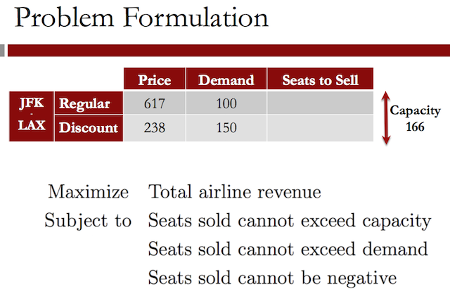
Mathematically, this can be written as shown in the figure. Which \(R\) and \(D\) are the demand constraints; and \(R\) and \(D\) are both greater than or equal to 0.
This is called a linear optimization problem.
1.5 Quick Question (2 points possible)
In the previous video, we set up an optimization problem with 2 different types of tickets.
1.5.1 Question a
How many decision variables would we have if there were 4 different types of tickets?
1.5.1.1 Answer
4
1.5.2 Question b
How many constraints would we have if there were 4 different types of tickets (with two different types of tickets, our model has 5 constraints: one capacity constraint, two demand constraints, and two non-negativity constraints)?
1.5.2.1 Answer
9
Explanation
If our model had 4 different types of tickets, we would have four decision variables, one for each type of ticket. We would have 9 constraints, since we would need one capacity constraint, 4 demand constraints, and 4 non-negativity constraints.
1.6 Video 4: Solving the Problem
In this video, we'll be solving our optimization problem using the spreadsheet AirlineRM. If you are using LibreOffice or OpenOffice, please download and open the spreadsheet AirlineRM.ods to follow along with the lecture. If you are using Microsoft Excel, please download and open the spreadsheet AirlineRM.xlsx to follow along with the lecture. The following spreadsheets have the completed model as it is at the end of the video: AirlineRM_Complete.ods and AirlineRM_Complete.xlsx.
If you are using LibreOffice or OpenOffice, the functions and solver will look very similar to what you see in this video. If you are using Microsoft Excel, please see the helpful tips below this video.
We'll solve our linear optimization problem in the software LibreOffice. LibreOffice is similar to Microsoft Excel, but it's an open source software, and is available for free on the internet.
Another option we could use is OpenOffice. You're welcome to use Excel, OpenOffice, or LibreOffice in this course, and whenever we mention LibreOffice, keep in mind that you could be using one of the other softwares instead.
For more information about the options, see the download instructions on edX. You should have already downloaded and installed LibreOffice.
If not, follow the instructions on edX before continuing with this video. Go ahead and open the file, Week9_AirlineRM.ods.
I've already set up the data for our problem and places for us to build our decisions, our objective, and our constraints. The decisions are highlighted in yellow.
These are the number of regular seats to sell, and the number of discount seats to sell. We'll just leave these cells blank for now, since the solver will be finding the optimal values. Our objective, which we saw in the previous video, is to maximize total revenue.
Let's go ahead and build the objective in this blue cell. It should equal the price of regular seats, times the number of regular seats we sell, plus the price the discount seats, times the number of discount seats we sell.
You should see 0 in this cell. That's because right now, we're not selling any seats. Our decision cells are blank. This could be a little tedious if we had more than two decisions.
To make it easier, we can use a nice function called sumproduct to build our objective.
Now in the objective cell, let's type equals, and then sumproduct, and then in parentheses, select the two prices, type a semicolon, and then select the two seats.
This will multiply the first price times the first decision variable, and the second price times the second decision variable, and add them up. Close the parentheses and hit Enter.
Note that if you're using Excel, you should use a comma instead of a semicolon.
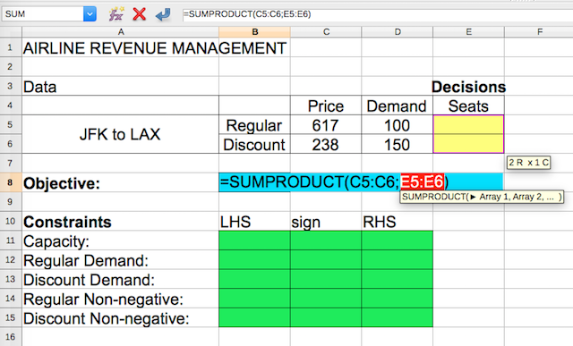
Now let's construct our constraints. The first constraint is the capacity constraint. The green table here allows us to easily write out our constraints in terms of what's on the left-hand side, LHS, what the sign is, like equals, less than or equals, or greater than or equals, and what's on the right-hand side, or RHS, of the constraint.
So for the capacity constraint, the left-hand side is equal to the number of regular seats plus the number of discount seats.
The sign is less than or equals, and the right-hand side is 166, the capacity of our aircraft.
The regular demand constraint should be the regular number of seats, which should be less than or equal to the regular demand, which equals 100. The discount demand should be the number of discount seats, which should be less than or equal to the demand, which is equal to 150. Note here that whenever I pick the seats or the demand, I pick those cells up on the top.
That's because if we want to change our demand, we could easily change it up at the top, and all of our constraints will change too.
Now, let's add in our non-negativity constraints. So the number of regular seats should be greater than or equal to 0, and the number of discount seats should be greater than or equal to 0.
Now we're ready to solve our problem. To do this, we just go to the Tools menu in LibreOffice and select Solver.
Now we need to fill in the information about our problem. The "Target cell" should be the objective. So with the blinking cursor in the target cell, select the objective cell.
We should also be selecting Maximum, since we're trying to maximize the total revenue.
The area called By changing cells should be our decision variables, so go ahead and select that blank area, and select the decision variables.
The Limiting conditions are our constraints. The Cell reference should be the left-hand side of the constraint, the Operator is the sign, and the Value is the right-hand side.
For constraints with the same sign, if they're in a row, we could select them at once to be more efficient.
So first, let's select the first three less than or equal to constraints. We want to make sure the operator is less than or equal to, the integer and binary options you see here, we'll explain next week, and the value should be the right-hand side of these constraints.
Then we need to add in the greater than or equal to constraints. So select the two left-hand sides. The operator should be greater than or equal to, and the value should be the two right-hand sides.
The last thing we want to do is in Options, make sure that the LibreOffice Linear Solver is selected.
Click OK, and then hit Solve. The solving result should say: "Solving successfully finished.
Result: \(77,408\). This is the objective of our optimal solution, and is the total revenue we get. Go ahead and click Keep Result.
And now back in our spreadsheet, we can see that our solution is to sell 100 regular seats and 66 discount seats. You may be thinking that you could have done this without the Solver.
But when the problems become more complicated, it's very difficult and often impossible to solve them by hand.
1.6.1 Helpful Tips for Excel
If you are using Microsoft Excel, the functions and solver you will be using are similar, but not identical, to what you see in the video. Here are some helpful tips to assist in using Excel for this class.
- Unlike LibreOffice and OpenOffice, the "Solver" option does not typically come pre-loaded into Excel. If you are on a Mac and you don't see "Solver…" in the Tools menu, you will need to add it in by going to the Tools menu, and selecting "Add-Ins…". Then, check "Solver.Xlam" if it is not already checked, and click OK. You should now see "Solver…" under the Tools menu. If you are on a Windows computer and you don't see Solver in the Data tab, go to the File menu, and click on "Options". Then select "Add-ins", then "Manage Excel Add-ins" and click Go. Check "Solver Add-in" if it is not already checked, and click OK. You might need to search for "SOLVER.XLAM" if you don't see a checkbox and click through a security warning about running macros within Excel - please click OK and run the macros. You should now see Solver in the Analysis section of the Data tab. You might experience various issues if you are using an older version of Excel - please visit the discussion foum or search on Google to get help with these problems.
- When using the sumproduct function, you should separate the two groups of cells with a comma, instead of a semicolon. So whenever we say semicolon in LibreOffice, you probably want a comma in Excel.
- Specifying the objective and decision variables is very similar to how it is done in LibreOffice, but the constraints are slightly different. To add a new constraint, you should click on the "Add" button to the right of the "Subject to the Constraints" box. This will change the window into one that looks more like how we are adding constraints in LibreOffice. After filling in the left-hand-side, sign, and right-hand-side, you can click on "Add" to add the constraint to your model and to continue adding constraints, or click "OK" to stop adding constraints. If you click "Cancel" it will just bring you back to the Solver window, without doing anything. You can change or delete a constraint by just selecting it and clicking the "Change" or "Delete" buttons next to the "Subject to the Constraints" box.
- Excel has a nice way of specifying non-negativity constraints. You can just check the "Make Unconstrained Variables Non-Negative" box insteading of adding the non-negativity constraints.
- You should always select the "Simplex LP" solving method in this class.
1.7 Quick Question (2 points possible)
In the previous video, we solved our optimization problem in LibreOffice. In your spreadsheet, change the demand for regular seats to 50 (cell D5). Then re-solve the model.
1.7.1 Question a
What is the new optimal objective value?
1.7.1.1 Answer
58458
1.7.2 Question b
Now change the demand of regular seats to 200. What is the new optimal objective value?
1.7.2.1 Answer
102422
Explanation
For each of these questions, change the value in cell D5 to the new demand. Then select "Solver…" in the "Tools" menu, and hit solve. The problem should re-solve, and the new objective value is in the Objective cell (B8).
1.8 Video 5: Visualizing the Problem
So we saw in the previous video how we can solve linear optimization problems in LibreOffice. Let's now try to get some intuition for what's going on by visualizing our problem.
Since we only have two decisions, R and D, we can visualize our constraints in two dimensions. We'll plot D on the x-axis, and R on the y-axis. We first have non-negativity constraints, so R and D are both greater than zero.
We can plot the capacity constraint, \(R + D\) less than or equal to 166, which is shown as the red line here. Our solution has to be to the left of this line according to this constraint.
Now, let's add in our demand constraints. The regular seats should be less than the demand of 100, which requires the solution to be below this blue line.
And the discount seats should be less than the demand of 150, which requires the solution to be to the left of this green line.
Taken together, our constraints define what we call our "feasible space" or the space of all possible values that our decisions can take according to our constraints.
To find the optimal solution now in our feasible space, we have to use the objective, \(617*R + 238*D\).
We can plot this objective in our feasible space. So to know how many seats we should sell to achieve a certain revenue, we can see different values of this line.
So to achieve a revenue of $20,000, our solution has to be somewhere on this line in our feasible space.
To achieve a revenue of $40,000, our solution has to be somewhere on this line in our feasible space. And to achieve a revenue of $60,000, our solution has to be somewhere on this line in our feasible space.
Since the revenue is increasing as we move this line up and our goal is to maximize the revenue, our optimal solution will be where this line can't go any further and still be in our feasible space.
So our optimal solution is at this point with a revenue of $77,408.
As we can see here, the solution is dependent on how the feasible space was defined.
1.9 Quick Question (2 points possible)
Using the visualization we created in the previous video, answer the following questions:
1.9.1 Question a
Suppose that our demand for regular seats remains the same (100) but our demand for discount seats goes down to 100. Will our optimal solution change?
1.9.1.1 Answer
[ ]Yes[X]No[ ]I can't answer this question using the visualization.
1.9.2 Question b
Now suppose that our demand for regular seats remains the same (100) but our demand for discount seats goes down to 50. Will our optimal solution change?
1.9.2.1 Answer
[X]Yes[ ]No[ ]I can't answer this question using the visualization.
Explanation
In the first case, our optimal solution will not change because we are only offering 66 discount seats. So even if the demand goes down to 100, we are not meeting the demand. But in the second case, we can only offer 50 discount seats. So our airplane will not be full, and our optimal solution will change to 100 regular seats and 50 discount seats.
1.10 Video 6: Sensitivity Analysis
Often, in linear optimization problems, we've estimated the data we're using in the problem, but it's subject to change.
Understanding how the solution changes when the data changes is called sensitivity analysis.
One way that the data could change is through marketing decisions. Suppose that American Airlines' management is trying to figure out whether or not it would be beneficial to invest in marketing its fares.
They forecast that the marketing effort is likely to attract one more unit of demand, of each type, for every $200 spent.
So for the discount fare, the marketing cost per unit is $200, and for the regular fare, the marketing cost per unit is also $200. We want to know how much this will increase our marginal revenue for each type of fare.
This graph shows our current feasible space and optimal solution. What would happen if we increased the marketing for discount fares?
The demand for discount fares would increase. But since we're not even meeting the current demand for discount fares with the optimal solution, this doesn't give us any extra revenue.
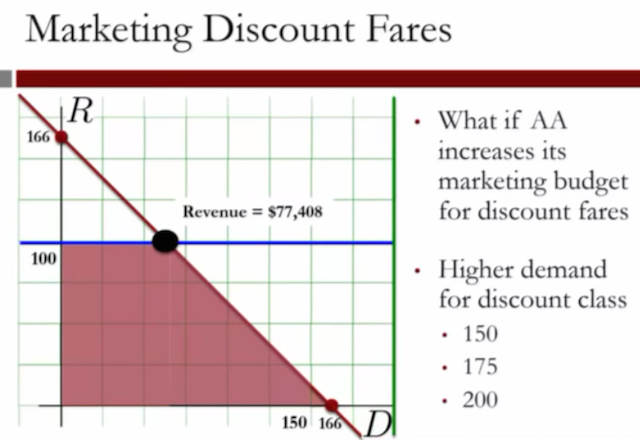
So we shouldn't add any marketing for discount fares. Actually, American Airlines could decrease their budget to market discount fares, and even if the demand decreases, it wouldn't change our revenue.
The demand could go all the way down to 66 without affecting our decisions.
In sensitivity analysis like this, we're often concerned with the shadow price of a constraint. For a discount demand constraint, this is the marginal revenue gained by increasing the demand by one unit.
In this case, the shadow price is 0 for demand greater than or equal to 66.
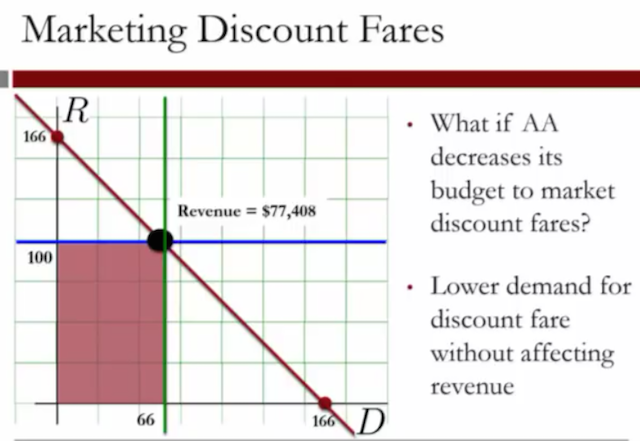
Now, let's look at what happens when we market regular fares. If we increase the demand for regular fares, our revenue increases.
If we increase by 25 units of demand, our revenue increases to $86,883. If we increase by another 25 units of demand, our revenue increases to $96,358. So what's the shadow price in this case?
Remember that the shadow price is the marginal revenue for a unit increase in demand, in this case, of regular seats.
From 100 to 125, the revenue increased by $86,883 minus $77,408, which is equal to $9,475. Since this was an increase of 25 units of demand, the shadow price is 9,475 divided by 25, which equals 379. We can calculate that this is the same shadow price from 125 to 150.
So the marginal revenue for every extra unit of regular demand from 100 to 166 is $379.
So given this analysis, how can we help the marketing department make their decisions? The forecast was an extra unit of demand for every $200 spent. For discount fares, this isn't worth it, since the shadow price, or marginal revenue, is 0. But for the regular fares, this is worth it, since the shadow price is $379.
So the marketing department should invest in marketing regular fares to increase the demand by 66 units.
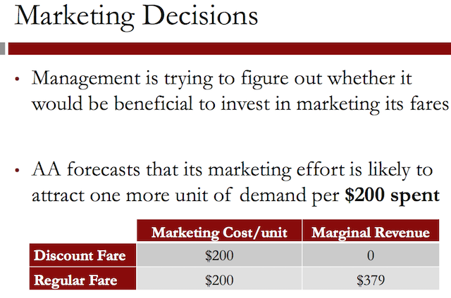
Another sensitivity analysis question in our problem is whether or not it would be beneficial to allocate a bigger aircraft for this flight. This would change the capacity constraint, which currently limits the capacity to 166.
With our current aircraft, the management knows that the cost per hour is $12,067. So the total cost of the six-hour flight is $72,402. With the 166 seats filled, we get a revenue of $77,408 from our optimal solution (Original Aircraft).
If we increase the capacity of the aircraft to 176 seats, the total cost would increase to $76,590. But how much would this increase our revenue?
And if we increase the capacity of the aircraft to 218 seats, the total cost would increase to $87,342. But how much would this increase our revenue?
For our analysis, let's assume that the demand does not change.
If we increase our capacity to 176, the capacity constraint will move right. And our optimal solution will move right too. We now get a revenue of $79,788.
If we then increase the capacity to 218 seats, the capacity constraint will move right again, and our revenue will increase to $89,784.
So let's look at our extra profit from increasing the capacity to see if it's worth it. With our current costs and revenue, the profit is $5,006.
If we increase the capacity to 176 seats, our profit actually decreases to $3,198. And if we increase the capacity to 218 seats, our profit decreases even more to $2,442.
So even though our revenue is increasing, the cost increases too.
So it's not profitable for us to increase the capacity of our aircraft.
1.11 Quick Question (1 point possible)
In your spreadsheet, change the capacity to 250 in the capacity constraint, the regular demand to 150, and the discount demand to 150. Then re-solve the model.
What is the objective value of the optimal solution?
1.11.1 Answer
116350
Explanation
You can change the values in the capacity constraint RHS (cell D11), the regular demand (cell D5), and the discount demand (cell D6) and resolve the model by selecting "Solver…" in the "Tools" menu. After it finishes solving, the objective value can be found in the blue cell (B8)
1.12 Video 7: Connecting Flights
In this video, we'll be solving our optimization problem using the spreadsheet AirlineRM_Connecting. If you are using LibreOffice or OpenOffice, please download and open the spreadsheet AirlineRM_Connecting.ods. If you are using Microsoft Excel, please download and open the spreadsheet AirlineRM_Connecting.xlsx. The following spreadsheets have the completed model as it is at the end of the video: AirlineRM_Connecting_Complete.ods and AirlineRM_Connecting_Complete.xlsx.
1.12.1 Solving Optimization Problems in R
In this class, we are using a spreadsheet software to solve optimization problems because we feel that this method is more intuitive and more widely used in the business world. However, you might be wondering how you can solve optimization problems in R. While we will not be teaching optimization in R in this course, we have provided this script file showing how the optimization problems discussed in this lecture can be solved in R. We will not be asking you to do this for any assignments in this course, so learning about optimization in R is completely optional.
1.13 Video 7: Connecting Flights
We've only considered optimizing the fares for a single route. In this video, we'll change our optimization formulation to include connecting flights.
Now, instead of just being able to go from JFK in New York to LAX in Los Angeles, let's suppose that the plane stops in Dallas at the Dallas Fort Worth airport. We still are just using one plane, but the passengers can now fly from New York to Dallas, Dallas to Los Angeles, or from New York to Los Angeles by just staying on the plane in Dallas.
So how does our optimization problem change? We now have six types of seats that we can offer: the original two types, regular and discount from New York to LA, and four new types.
We can sell both regular and discount seats from New York to Dallas, and regular and discount seats from Dallas to Los Angeles. We know the price of each type of ticket as well as the forecasted demand for each type of ticket.
We also know that we have a capacity of 166 seats on our plane for each leg of the trip. There's room for 166 passengers on the plane from New York to Dallas, or the first leg of the trip. Then the passengers with a final destination of Dallas will get off the plane and the passengers flying from Dallas to LA will get on the plane.
On the second leg of the trip, flying from Dallas to LA, we also have a capacity of 166 seats. So we need to remember that the passengers flying from New York to LA will take up capacity on both legs of the trip, while the other types of passengers will only take up capacity on one leg of the trip.
So what are our decisions now? They're the number of regular tickets to sell for each type, and the number of discount tickets to sell for each type. So in total, we have six decisions to make.
Now, let's define our objective. Like before, it's to maximize the total revenue. This is the sum of the price of the ticket times the number of seats of that type we sell, for each type of ticket.
And like before, we have two types of constraints– capacity constraints and demand constraints. For the capacity constraints, the airline shouldn't sell more seats than the capacity of the plane, for each leg of the trip.
So we need two capacity constraints here: one for the New York to Dallas leg and one for the Dallas to LA leg.
Note that the New York to LA passengers have to be counted on both legs of the trip. So the first constraint accounts for all passengers that need to be on the plane when it flies from New York to Dallas, and the second constraint accounts for all passengers that need to be on the plane when it flies from Dallas to LA.
We also need six demand constraints, one for each type of ticket. The number of seats sold should not exceed the forecasted demand for each type.
And lastly, we can't sell a negative number of seats, so we have our non-negativity constraints to prevent the variables from being negative. Let's now go to LibreOffice and adjust our formulation to solve this bigger problem.
In LibreOffice, go ahead and open the file
Week9_AirlineRM_Connecting.ods. In this file, I've set up our data,
our decisions, our objective, and our constraints. Our decisions,
again, are highlighted in yellow. We have a decision for each type of
seat on each flight. Our objective here is the spot in blue. To build
our objective, we'll use the sumproduct function.
So type = and then sumproduct, and in parentheses, select all six prices, type a semicolon, and then select all six decisions.
Now let's create our constraints. The first constraints are capacity constraints. The first is the capacity on the leg from New York to Dallas. The left-hand side should be equal to the seats from New York to LA plus the seats from New York to Dallas.
The sign is less than or equals and the right-hand side is 166, the capacity of our aircraft.
The sign is less than or equals and the right-hand side is 166, the capacity of our aircraft.
Now we need to build the capacity constraint from Dallas to LA. The left-hand side is equal to the seats from New York to LA plus the seats from Dallas to LA. Our sign is, again, less than or equals and our right-hand side is 166.
Our final model is:
So now go ahead and in the Tools menu, select Solver. We need to first fill in the target cell, which should be the objective. Make sure that Maximum is selected. Then, in the Changing Cells box, select all six decisions. Down in the Limiting Conditions, let's now build our constraints.
For the Cell Reference column, let's start by selecting the left-hand side of the two capacity constraints.
The Operator should be less than or equals and the Value should be the right-hand side of these two capacity constraints.
Now let's make the demand constraints. In Cell Reference, just directly select the six decision variables, make sure the Operator's less than or equals, and for the Value, select the six demand constraints. This is a bit easier than what we did before because we didn't have to type them all out in our spreadsheet.
Now let's do a similar thing for the non-negativity constraints, where in Cell Reference, we select the six decisions. The Operator this time should be greater than or equals, and for the Value, just type 0.
Make sure in Options that the Linear Solver is selected, and go ahead and hit Solve. The solving result should say:
"Solving successfully finished. Result: 120,514."
This is our total revenue.
So we see here that the optimal solution is to sell 80 tickets for the regular price from New York to LA, 0 of the discount price from New York to LA, 75 of the regular price from New York to Dallas, 11 of the discount price from New York to Dallas, 60 of the regular price from Dallas to LA, and lastly, 26 of the discount price from Dallas to LA.
1.14 Quick Question (2 points possible)
In this quick question, we'll perform some sensitivity analysis on the connecting flights problem.
Previously, we said that American Airlines could market their fares to increase demand. It costs $200 in advertising to increase demand by one unit.
1.14.1 Question a
Is it worth it to market the discount fares from JFK to DFW?
1.14.1.1 Answer
[ ]Yes. American Airlines should market the discount fares from JFK to DFW to increase demand by 50.[ ]Yes. American Airlines should market the discount fares from JFK to DFW to increase demand by 10.[ ]No. American Airlines should not market the discount fares from JFK to DFW because even though the revenue increases, it does not exceed the costs.[X]No. American Airlines should not market the discount fares from JFK to DFW because the revenue does not increase at all by increasing the demand for these tickets.
Explanation
You can answer this question without re-solving the model by noticing that we are not meeting the demand for discount fares from JFK to DFW at all. The demand could increase by 100, and we still would not offer more than 11 discount fares.
Alternatively, you could change the demand for discount fares, and re-solve the model. The solution does not change, regardless of how much you increase the demand.
1.14.2 Question b
Is it worth it to market the regular fares from JFK to LAX?
1.14.2.1 Answer
[ ]Yes. American Airlines should market the regular fares from JFK to LAX to increase demand by 50.[ ]Yes. American Airlines should market the regular fares from JFK to LAX to increase demand by 10.[X]No. American Airlines should not market the regular fares from JFK to LAX because even though the revenue increases, it does not exceed the costs.[ ]No. American Airlines should not market the regular fares from JFK to LAX because the revenue does not increase at all by increasing the demand for these tickets.
Explanation
In the current solution, we are meeting the demand for regular tickets from JFK to LAX. If we increase the demand by 10, we offer 10 more regular tickets, but our revenue only increases by $140, which does not exceed the cost of $2000. If we increase the demand by 50, to 130, we only offer 91 seats. Therefore, American Airlines should not market the regular fares from JFK to LAX because even though the revenue increases, it does not exceed the costs.
1.15 Video 8: The Edge of Revenue Management
The overall revenue management problem involves a network of airports and literally thousands of flights. Clearly optimization is needed. Myopic solutions leave significant revenue on the table.
Furthermore, revenue management involves tens of different classes that have different restrictions, different characteristics like mile awards, and fares.
*PEOPLExpress could not compete with American Airlines' Ultimate Super Saver fares. Donald Burr, CEO of PEOPLExpress in 1985, notes, "We were a vibrant, profitable company from 1981 to 1985, and then we tipped right over into losing $50 million a month.
We had been profitable from the day we started until American came at us with Ultimate Super Savers."

Revenue management is the science of selling the right seats to the right customers at the right prices. To illustrate the impact that revenue management has had on American Airlines, we note what Robert Crandall, CEO of American, wrote during the period that revenue management practices were applied.
"Revenue management is the single most important technical development in transportation management since we entered the era of airline deregulation. We estimate that revenue management has generated $1.4 billion in incremental revenue in the last three years."

Let us see the impact of revenue management more broadly. Today, American Airlines has emerged from bankruptcy by merging with US Air Airlines. However, American Airlines has spun off Sabre Holdings, the entity that built revenue management for American.
As of November 2012, Sabre ranked 133rd among America's largest private companies with $3.15 billion in sales, 400 airlines, 90,000 hotels, and 30 car rental companies as clients. Today, companies prosper from revenue management. Delta Airlines, for example, increased annual revenue by $300 million.
Marriott hotels increased annual revenue by $100 million.
1.16 Optimization with R
Lets install an load important packages
writeLines("\n :: Install new package: optimx ...") ## install.packages('optimx', repos='http://cran.rstudio.com/') writeLines("\n :: NOTE: Please comment after install once...") library(optimx) writeLines("\n :: Library optimx loaded...")
:: Install new package: optimx ... :: NOTE: Please comment after install once... :: Library optimx loaded...
2 Radiation Therapy: An Application of Linear Optimization
2.1 Video 1: Introduction
We will discuss how linear optimization is used to design radiation therapy treatments for cancer patients.
Cancer is the second leading cause of death in the United States, second only to heart disease. There were an estimated 570,000 deaths in 2013 due to cancer. Additionally, over 1.6 million new cases of cancer will be diagnosed in the United States in 2013.
These trends are also seen throughout the world. Worldwide, cancer is a leading cause of death, with 8.2 million deaths in 2012.
Cancer can be treated using radiation therapy, where beams of high-energy photons are fired into the patient to kill cancerous cells.
Radiation therapy has a history going back to the late 1800s. X-rays were discovered by Wilhelm Rontgen in 1895, who was later awarded the first Nobel Prize in Physics.
Shortly after the discovery, X-rays started being used to treat skin cancers. This image shows an x-ray of Rontgen's wife's hand. You can see the bones in her hand as well as her wedding ring on her finger.
Later in the 1900s, the first radiation delivery machines, called linear accelerators, were developed. Then computed tomography, or CT scans, were invented in 1971. These discoveries led to the invention of Intensity Modulated Radiation Therapy, or IMRT, in the early 1980s.
The invention of IMRT significantly improved the ability of radiation therapy to target cancerous cells. To reach the tumor, radiation passes through healthy tissue and therefore damages both healthy and cancerous tissue.
This damage to healthy tissue can lead to undesirable side effects that reduce post-treatment quality of life.
For example, blistering and burning of skin can occur because of the damage to healthy skin cells. For this reason, we want the dose to fit the tumor as closely as possible to reduce the dose to healthy tissue. This became possible with the invention of IMRT.
In IMRT, the intensity profile of each beam is non-uniform. Before IMRT, each beam had to have the same intensity, so the tumor could not be targeted very well.
But by using non-uniform intensity profiles, the radiation dose can better fit the tumor. Let's see what this looks like.
In this image, we have a person's body outlined in black, and then the target, or tumor, and two critical structures also outlined.
We would like to maximize the radiation to the target, while minimizing the dose to healthy tissue, and especially to the critical structures. Using traditional radiation therapy, each of the three beams has the same intensity throughout the beam.
So to deliver enough radiation to the tumor, we also have to deliver a significant amount of radiation to the critical structures and to other healthy tissue.
But by using IMRT, we can change the intensity throughout each beam to make it non-uniform. Some pieces of the beam will have a higher intensity than others.
This allows us to deliver the necessary amount of radiation to the tumor, while minimizing the total radiation to healthy tissue, and thus, the critical structures get significantly less radiation.
Each of the pieces of the beam is referred to as a beamlet. So in IMRT, we decide the intensity of each of the beamlets so that we can target the tumor with radiation while minimizing the radiation to healthy tissue.
So in designing an IMRT treatment, the fundamental problem is –
how should the beamlet intensities be selected to deliver a therapeutic dose to the tumor and to minimize damage to healthy tissue?
2.2 Quick Question (1 point possible)
In the next video, we'll be formulating the IMRT problem as a linear optimization problem. What do you think the decision variables in our problem will be?
2.2.1 Answer
[ ]The amount of radiation to deliver to the tumor[ ]The intensities of the beams[X]The intensities of the beamlets The intensities of the beamlets - correct[ ]The shape of the tumor
Explanation
We get to decide the beamlet intensities - these will be the decision variables in our optimization problem. The amount of radiation to the tumor will be computed using the beamlet intensities, but we also want to make sure we know the amount of radiation to healthy tissue. The intensities of the beams would have been the decision variables in traditional radiation therapy, and the shape of the tumor is data.
2.3 Video 2: An Optimization Problem
We will discuss how radiation therapy can be framed as an optimization problem. The data's collected in the treatment planning process, which starts from a CT scan, like the one you see here, on the right.
Using a CT scan, a radiation oncologist contours, or draws outlines around the tumor and various critical structures. In this image, the oncologist would contour structures like the parotid glands, the largest of the saliva glands, and the brain.
Then, each structure is discretized into voxels, or volume elements, which are typically four millimeters in dimension.
The second image here shows a closer view of the brain. You can see the small squares, or voxels. Here, they're two-dimensional, but in reality they would be three-dimensional.
Now, we can compute how much dose each beamlet, or piece of the beam, delivers to each voxel.
We'll start with a small example. Suppose we have nine voxels and six beamlets. Our voxels can be categorized into three types: the tumor voxels, which are colored pink here; the spinal cord voxel, colored dark green; and other healthy tissue voxels, colored light green.
So we have four tumor voxels, one spinal cord voxel, and four other healthy tissue voxels.
We have two beams that are each split into three beamlets. Beam 1 is composed of beamlets 1, 2, and 3, and comes in from the right. Beam 2 is composed of beamlets 4, 5, and 6, and comes in from the top.
Our objective is to minimize the total dose to healthy tissue, both to the spinal cord and to the other healthy tissue.
We have two types of constraints. The first is that the dose to the tumor voxels must be at least 7 Gray, which is the unit of measure for radiation.
Our second constraint is that the dose to the spinal cord voxel can't be more than 5 Gray, since we want to be careful to protect the spinal cord.
We know the dose that each beamlet gives to each voxel at unit intensity. This table shows the dose that each beamlet in Beam 1 gives to the voxels.
Remember that this is at unit intensity. If we double the intensity of the beamlet, we double the doses.
The dose to each voxel can depend on how far the beamlet has to travel, or the type of tissue that the beamlet has to travel through.
Similarly, we know the dose that each beamlet in Beam 2 gives to each voxel, again at unit intensity. The dose depends on the direction of the beam and what it travels through.
Putting these tables together, we can write out our optimization problem. Our decision variables are the intensities of each beamlet.
We'll call them \(x_1\), the intensity for beamlet \(1\), \(x_2\), the intensity for beamlet \(2\), \(x_3\), the intensity for beamlet 3, etc., all the way up through \(x_6\).
As we mentioned before, our objective is to minimize the total dose to the healthy tissue, including the spinal cord.
- So we want to minimize the total dose beamlets give to healthy tissues.
- Now for our constraints. First, we need to make sure that each voxel of the tumor gets a dose of at least 7.
- Then for the spinal cord, we need to make sure that do not receive more that 5.
- Non-negativity constraints are important too.
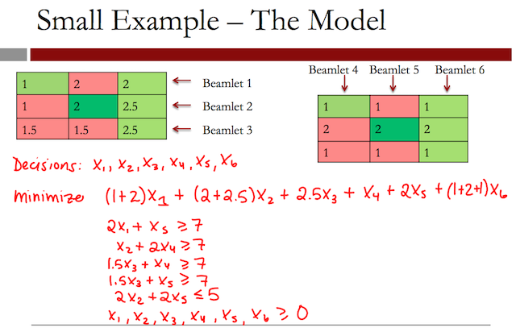
2.4 Quick Question (2 points possible)
In the previous video, we constructed the optimization problem (see the last slide).
2.4.1 Question a
If the beamlet intensity of the first beamlet is set to 3, how much radiation will that beamlet deliver to tumor voxels?
2.4.1.1 Answer
6
2.4.2 Question b
How much radiation will it deliver to healthy tissue voxels?
2.4.2.1 Answer
$$ 3 + 6 = 9 $$
Explanation
Beamlet 1 hits one tumor voxel, and two healthy tissue voxels. At unit intensity, it delivers a dose of 2 to the tumor voxel, a dose of 2 to the first healthy tissue voxel, and a dose of 1 to the second healthy tissue voxel. At intensity 3, this means that it will deliver a dose of \(2 \times 3 = 6\) to the tumor voxel, and \(2 \times 3 + 1 \times 3 = 9\) to the healthy tissue voxels.
2.5 Video 3: Solving the Problem
In this video, we'll be using the spreadsheet IMRT_SimpleExample. If you are using LibreOffice or OpenOffice, please download and open the spreadsheet IMRT_SimpleExample.ods. If you are using Microsoft Excel, please download and open the spreadsheet IMRT_SimpleExample.xlsx. The following spreadsheets have the completed model as it is at the end of the video: IMRT_SimpleExample_Complete.ods and IMRT_SimpleExample_Complete.xlsx.
We will solve our simple example in LibreOffice.
At the top of the spreadsheet, you should see our data. For each beamlet and each voxel, we have the dose that that beamlet gives to that voxel at unit intensity.
So we have this data for voxel one, voxel two, voxel three, all the way up to voxel nine. Each row corresponds to one of the six beamlets. This is the data that we saw on the slides in the previous video.
Below the data, we've outlined our decision variables, which are the intensities of the beamlets. So for beamlets one through six, we have one decision variable. These six decision variables are outlined in yellow.
Right now, the decision variable cells are blank, because the values will be filled in by Solver.
Below the decision variables, we have our objective. Our objective is to minimize the total dose to healthy tissue. The healthy-tissue voxels are voxels one, three, five, six, and nine.
So let's go ahead and build our objective in the blue cell here. So first, we want to add up the total dose that each beamlet gives to voxel one.
So here we will use the function that we used in the previous lecture,
sumproduct. So type an equals sign, and then sumproduct, and
select all of the decision variables, semicolon, and then all of the
doses.
This will add up the total dose that beamlet one gives to voxel one, plus the total dose beamlet two gives to voxel one, plus the total dose beamlet three gives to voxel one, etc. Now we want to repeat this for voxels three, five, six, and nine– the other healthy-tissue voxels.
When Solver fills in our decision variables, our objective value will be here.
The remaining constraints we have are the non-negativity constraints, which we'll add in directly in the Solver. So now go ahead and go to the Tools menu, and select Solver.
In the Options, make sure you've selected the Linear Solver, and
click OK. Now go ahead and hit Solve. You should see a solving result
that says: "Solving successfully finished. Result: \(22.75\).
That's the optimal objective function value. Go ahead and select Keep Result. Now let's take a look at our solution.
So the optimal solution is to have:
- beamlet one at an intensity 2.25,
- beamlet two at an intensity of 0,
- beamlet three at an intensity of 3,
- beamlet four at an intensity of 3.5,
- beamlet five at an intensity of 2.5,
- and beamlet six at an intensity of 0.
This makes sense, because beamlet two goes across the spinal cord, and beamlet six only goes down healthy-tissue voxels.
And if we look at our constraints, we can double-check that each tumor voxel is receiving a dose of at least 7 – one tumor voxel gets a dose of 8 – and the spinal cord is receiving a dose of 5, which is the maximum possible dose.
2.6 Quick Question (1 point possible)
In our optimal solution, we are giving the maximum allowed dose to the spinal cord (5). If we were to relax this, how much could we decrease the objective? Change the right-hand-side (RHS) of the spinal cord constraint to 6, and re-solve the model.
By how much did we decrease the objective? (Hint: the previous objective value was 22.75)
2.6.1 Answer
22.75 - 22.1666666667
[1] 0.5833333
Explanation
If you change the RHS of the spinal cord constraint to 6 and re-solve the model (Tools->Solver, then hit solve) the new objective is 22.666667. So we decreased the objective by \(0.58333333\).
2.7 Video 4: A Head and Neck Case
Now, let's take a look at a full example of a case. This is a head and neck example, and the CT scans are shown on the right. There are a total of 132,878 voxels. The target, or tumor, has 9,777 voxels.
There are five critical structures that we want to minimize the dose to– the spinal cord, the brain, the brain stem, the parotid glands, and the mandible or jaw.
We're using five beams, and each beam is composed of about 60 beamlets. In total, there are 328 beamlets.
In this example, we want the dose to the whole tumor to be between 70 and 77 gray. The spinal cord dose should be no more than 45 gray, since significant damage to any voxel in the spinal cord will result in loss of function.
The brain stem dose should be no more than 54 gray, and the mandible dose should be no more than 70 gray. The average parotid gland dose should be at most 26 gray. This constraint is a little different, since the parotid gland is a parallel structure.
Significant damage to any one voxel does not jeopardize function of the entire organ.
So what is our optimization problem now? Again, our decisions are the intensities of the beamlets. Our objective is to minimize the total dose to healthy tissue.
Our constraints are limits on the tumor dose and upper bounds for the spinal cord, brain stem, and mandible. We also have a constraint to limit the average parotid dose to 26 gray.
Lastly, all of our intensities, or decision variables, should be non-negative.
We solved this optimization problem, and this plot shows the results. On the x-axis is the dose, in gray, and on the y-axis is the fraction of voxels that received that dose or higher.
Each line corresponds to a different structure. We can see that for the tumor, which is shown as the red line, 100% of the voxels get a dose of 70 gray, and 0% of the voxels get a dose of more than 77 gray. This is what our constraint specified.
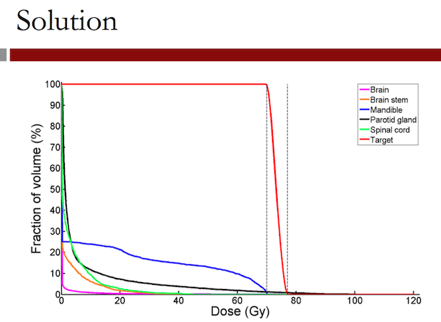
While none of the critical structures are getting very high doses, it looks like the mandible, which is shown as the blue line, is receiving the highest dose of the healthy organs.
In the next video, we'll explore different solutions and the shadow prices of our constraints.
2.8 Quick Question (1 point possible)
In the previous video, we discussed a Head and Neck case with 132,878 voxels total, 9,777 voxels in the tumor, and 328 beamlets.
How many decision variables does our optimization model have?
2.8.1 Answer
328 beamlets.
Explanation
Our decision variables are for the intensities of the beamlets. So in this case, we would have 328 decision variables, which is the number of beamlets.
2.9 Video 5: Sensitivity Analysis
In the previous video, we saw that the mandible, or jawbone, received the highest dose out of all of the critical structures. The mean mandible dose was 11.3 gray.
So how can we reduce this?
One approach is to modify our objective function. Our current objective is to minimize the sum of the total dose to each critical structure.
So we're minimizing the sum of the total dose to the brain, plus the total dose to the brain stem, plus a total dose to the spinal cord, plus the total dose to the parotid glands, plus the total dose to the mandible.
We could instead change our objective to make the total dose to the mandible more important. This can be done by weighting the term for the mandible. By giving the mandible dose a weight of 10, the total dose to the mandible becomes 10 times more important in our objective than the total dose to the other critical structures.
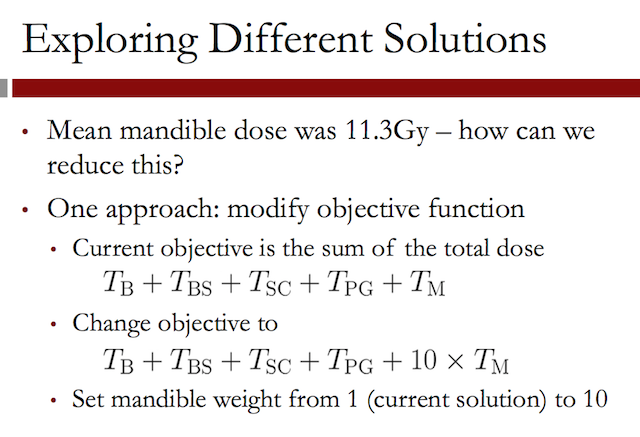
If we solve our problem with this new objective, we get the solution shown in this figure. The dose to the tumor, shown as the red line, does not change. It still stays within the constraints we've defined.
For each of the critical structures, the solution with the previous objective is shown as a dotted line, and the new solution with the weighted objective is shown as a solid line.
We can see that the dose to the mandible, shown in blue, has significantly decreased by adding a weight in the objective.
However, the dose to other critical structures has increased, especially to the parotid glands, shown in black, and to the spinal cord, shown in green. This shows how you can modify the objective to capture different trade-offs that might be desirable to different decision-makers or for different patients.
Another way to explore trade-offs is to modify the constraints. For example, by relaxing the mandible maximum dose constraint or by allowing the maximum dose to the mandible to be higher, we may improve our total healthy tissue dose.
We would like to know how much the objective changes for different constraints.
This can be answered by looking at the shadow prices of the constraints. Recall that we have a constraint limiting the total dose for each voxel in each critical structure.
This table shows the highest shadow price for any one voxel in each critical structure. The parotid glands and the brain stem have shadow prices of 0. This means that we're not even giving the maximum amount of radiation allowed to these structures, so modifying the constraints is not beneficial.
The spinal cord has a shadow price of 96.911. This means that by increasing the radiation to one voxel of the spinal cord by one unit, we can decrease the total radiation to other critical structures by 96.9 units. The mandible has the highest shadow price of 7,399.72.
So if a slight increase in the mandible dose to a single voxel is acceptable, the total healthy tissue dose can be reduced. Keep in mind that this is the total reduction across all voxels in the objective. We've seen in this video that by modifying the formulation, both the objective and the constraints, we can explore different trade-offs in our problem.
2.10 Quick Question (2 points possible)
In your spreadsheet from Video 3, make sure that you have solved the original small example problem (change the spinal cord limit back to 5 and re-solve if you have changed it, and make sure the objective value is 22.75).
Now, change the weight for the spinal cord term in the objective to 5.
2.10.1 Question a
Without re-solving, what does the objective value of the current solution change to?
The coefficient change from (2 doses * 1 weight) to
$$ 5 \times 2 = 10 doses $$
2.10.1.1 Answer
42.75
Explanation
The term SUMPRODUCT(B14:B19;F5:F10) in the objective (corresponding to Voxel 5) should now be 5*SUMPRODUCT(B14:B19;F5:F10). This changes the objective value to 42.75.
2.10.2 Question b
Now re-solve the model. What does the objective change to?
2.10.2.1 Answer
25.6666666667
Notice how we are now giving a smaller dose to the spinal cord!
Explanation
You can resolve the model by going to Solver, and just hitting Solve. The new optimal objective function value is 25.666667.
2.11 Video 6: The Analytics Edge
Radiation therapy is one of the most well used applications of optimization in health care. In practice, radiation machines are connected to treatment planning software that implements and solves optimization models, both linear optimization models, like we saw here, and other types of optimization models.
Some examples of radiation machines that use optimization software are Pinnacle by Philips, RayStation by RaySearch Labs, and Eclipse by Varian.

There are many extensions to the optimization model we described here. One is the selection of beam angles. The beam angles can be selected jointly with the intensity profiles by using integer optimization.
This allows the treatment to be further personalized to the specific tumor and person receiving the radiation.
Integer optimization is another type of optimization model and will be the topic of next week. Another extension is accounting for uncertainty. Often, the quality of IMRT treatments is degraded due to uncertain organ motion.
For example, in lung cancer the target area is around the lungs. But since the patient is breathing throughout the treatment, the target area is moving and the location is slightly uncertain.
We can manage this uncertainty using a method known as robust optimization. There is a significant amount of literature on this method and its application to radiation therapy.
Linear optimization significantly improves the efficiency of radiation therapy. Manually designing an IMRT treatment would be inefficient and impractical.
By using linear optimization, IMRT can be designed in an efficient and systematic way. As we saw in this lecture, clinical criteria can be modeled using constraints, and the treatment planner can explore trade-offs by changing the model.
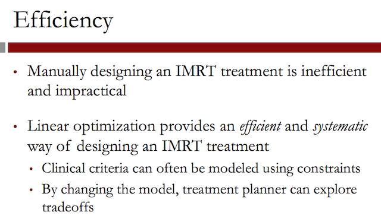
But ultimately, IMRT and the use of optimization benefits the patient. In head and neck cancers, saliva glands were rarely spared prior to IMRT. But by using optimized IMRT treatments, saliva glands can now be spared.
In prostate cancer, IMRT treatments reduce toxicities and allow for higher tumor doses to be delivered safely.
And in lung cancer, optimized IMRT reduced the risk of radiation induced pneumonitis. These are just three examples of the benefits of IMRT. Overall, optimized IMRT allows clinicians to deliver treatment that was previously impossible and to improve the quality of life for patients.
3 Google AdWords: Optimizing Online Advertising (Recitation)
3.1 Welcome to Recitation 8
Welcome to the linear optimization recitation. My name is Velibor, and I'll be guiding you through it. This week, we'll learn the core techniques in applying linear optimization.
We'll learn how to model a problem, how to solve it, how to compare the solution to alternative solutions, and how to perform sensitivity analysis using the model. The problem we will use to guide this whole process will be the online advertising allocation problem that is at the heart of Google's online advertising system, which is also known as AdWords.
3.2 Video 1: Introduction
In this recitation, we'll be going over the basic steps in building, solving, and analyzing a linear optimization model. The problem we will use to demonstrate this comes from Google AdWords, which is the advertising system used by Google.
Let's begin by talking a little bit about Google. As you may know, Google is a major company in the United States that provides products and services related to the internet.
Google's official mission statement is to organize the world's information, and to make it universally accessible and useful. Although Google today develops a variety of products that includes things such as the Android operating system, the Google Glass wearable computer, and even self-driving cars, Google became famous– and is still most widely known– for its search engine, which can be found at www.google.com.
The search engine lets the user enter a query. Google then searches through the web pages accessible on the internet, to return links to websites that best fit the search query.
Now, how did Google come about? Well, the idea of Google originated as a research project of two people– Sergey Brin and Larry Page.
This was in 1996, while they were still graduate students at Stanford University. Their idea, in a nut shell, was to measure the importance of a web page to a particular query, not just by measuring how much that query occurs in that web page, but also by considering the links to that web page from other web pages.
They quickly found that this idea could form the core of a search engine, and they found that the search engine actually worked quite well.
They eventually named it Google. And in 1998, they incorporated Google as a company. In the same year, they received their first funding. At the time, they had a database of 60 million web pages. Six years later, Google's initial public offering took place, and Google became a publicly traded company.
After going public, Google has continued to grow at an immense pace, acquiring other internet companies like YouTube in 2007. In 2013, Google's traffic reached more than a billion unique monthly visitors.
Today, more than two-thirds of all the searches done on the internet are powered by Google's search engine. Now, you may be rather surprised to hear that Google does not actually make any money directly from its search engine. In fact, Google's search engine is free for anyone to use.
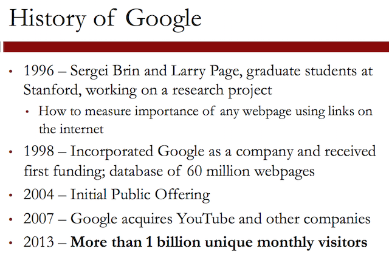
So then, how does Google make money? And the answer is – through online advertising.
Basically, Google sells space on its web pages– in particular, results of its search queries– to outside companies. These companies can then place advertisements, or ads, on these spaces.
Let's take a look at a concrete example. So here we have a screen shot of the results of a Google search. The query here was "nine inch nails tickets". Nine Inch Nails– if you're not familiar with it– is a critically acclaimed industrial rock band from the United States, that recently toured North America.
On this page, there are only two search results– here and here. The first is a link to Ticketmaster, which is a company that sells concert tickets. The second is to the tour page of Nine Inch Nails' official website.
All the remaining links on this web page are ads. In this case, these are mostly links to other third-party companies that resell tickets.
Now, you may be asking, why do companies advertise with Google? Well, there are several reasons. As you saw a few slides back, Google receives a lot of internet traffic, as a lot of users conduct searches on Google.
So an ad placed on Google could be seen by a very large number of users. At the same time, Google's web pages– and the ads in them– are formatted in a very clean, visually appealing way.
Lastly, companies that advertise with Google can select which queries their ads will be displayed for. This is a very useful feature, because a company can then target specific customers that they think are likely to buy their product, or to use their service.
Google's online advertising system is known as AdWords and is responsible for more than 97% percent of Google's revenues.
3.3 Video 2: How Online Advertising Works
The process by which Google determines which ads to display for which queries consists of three key steps.
- First, Google runs an auction where advertisers place bids for different queries that they want to display their ads on.
- Next, Google uses each bid in a metric known as the Quality Score, which basically measures how well a particular ad fits a particular query to decide a quantity known as the price-per-click. Google does this for each advertiser and each query.
- Finally, and this is where optimization plays a key role, Google decides how often to display each ad for each query.
This problem, as we'll see shortly, can be formulated as a linear optimization model. Let's begin by thinking about the data that we need for this model.
In particular, let's think about the price-per-click.
So as we just discussed, Google decides each advertiser's price-per-click. The price-per-click is how much each advertiser pays Google when a user clicks on the ad for that query.
Each advertiser also specifies a budget. This is the total amount of money that the advertiser has available to pay for all the clicks on their ad.
Every time a user clicks on the advertiser's ad, the advertiser's budget is depleted by the price-per-click for that ad for that user's query.
Let's illustrate this with a small example. So suppose that we are Google, and three of the major wireless service providers in the United States – AT&T, T-Mobile, and Verizon – come to us wanting to place ads on three different search queries: query 1, which is "4G LTE"; query 2, which is the "largest LTE"; and query 3, which is "best LTE network".
If you're not familiar with these terms, 4G and LTE basically refer to different standards of high speed wireless data communication.
The table here shows the price-per-click of each advertiser in each
query. So for example, this 10 here means that T-Mobile will pay
Google $10 every time a user searches for query 1 and clicks on
T-Mobile's advertisement. In this example, T-Mobile's budget is $100.
If T-Mobile begins advertising and by some point five people have clicked on T-Mobile's ad when they search for "4G LTE", then T-Mobile will need to pay five times $10, or a total of $50.
If T-Mobile's budget is $100, this means that T-Mobile is left with $100 minus $50, for a remaining budget of $50.
Now, while the price-per-click is important to know, we must remember that the price-per-click is exactly that, the price that the advertiser pays to Google for a single click of a given ad, on a given query.
This price is paid only if the user clicks on the ad. But typically, the people who use Google search engine, who are you and me, will not click on every ad that is shown to them.
Therefore, we need a way to capture how often users click on ads. This
is where the idea of click-through-rate becomes useful.
The click-through-rate is the probability that a user clicks on an
advertiser's ad for a given query. You can also think of this as the
average number of clicks that we expect per user.
And this quantity is defined, as we said, per advertiser and per query.
So to illustrate this, for the example that we just introduced a few slides ago, suppose that we have the following click-through-rates.
The number 0.08 here means that there is an 8% chance that a user who searches for best LTE network will click on AT&T's ad if it is shown to them. In terms of the number of users who click on an ad for a given query, this means that for 50 users, if the click-through-rate is 0.08, we expect to see 4 users clicking on the ad.
Similarly, if there are a hundred users who view the ad and 8% of them click on the ad, we expect to see eight users clicking on AT&T's ad for query 3.
In the next video, we'll define additional data that we'll need to
formulate the problem. In particular, we will see how the
click-through-rate and the price-per-click can be combined
together to obtain a new quantity called the average price per
display. This derived quantity will form a crucial part of our linear
optimization model.
3.4 Video 3: Prices and Queries
We introduced the concept of price-per-click and
click-through-rate. Once we know both of these quantities, we can
calculate the average price per display. This is simply the average
amount that an advertiser pays when a user is shown their ad.
We can compute this by multiplying the price-per-click with the
click-through-rate.
Let's go through an example to see how this works. Suppose we have 10 users who search for "best LTE network". Google decides to display Verizon's ad to all of them.

We know that the click-through-rate for Verizon and for the "best
LTE network" query is 0.2, so only two users click on the ad.
Verizon must now pay the price-per-click for each of these
users. Since there were two clicks and each click costs $25, Verizon
must pay a total of $50 to Google.
If we consider how much Verizon paid to Google on average, per user, or equivalently how much Verizon paid per display of the ad, we just divide the total amount of $50 for the 10 users who saw the ad. Doing this, we see that the average price per display was $5.
We could have obtained this amount in a simpler way. In particular, as
we defined in the previous slide, this turns out to be exactly the
same as the price-per-click multiplied by the click-through-rate.
For our data then, to obtain the average price per display
we simply need to multiply the price-per-click table and the
click-through-rate tables together.
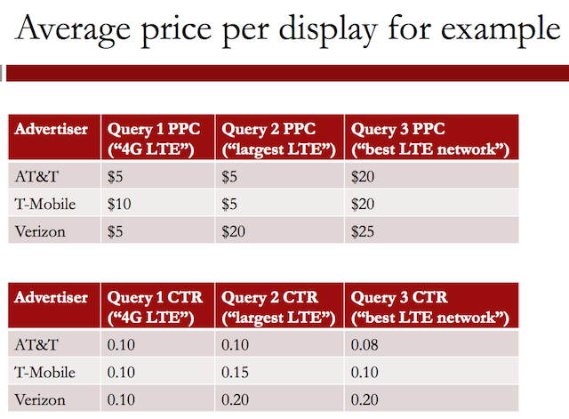
The result table is
The last piece of data that we need before we can define our problem is we need to know how popular the queries are. Obviously, Google does not control how many times a search query will be searched because the users are the ones who submit the queries.
However, Google does have an estimate of the number of times, on average, the query will be requested over a given day.
For the example that we have been building so far, let's suppose that we expect to see "4G LTE" 140 times, "largest LTE" 80 times, and "best LTE network" 80 times, as well.
We're now ready to start modeling this problem. The problem that we will consider is this. How many times should Google display each ad for each query, so as to maximize their total revenue?
3.5 Video 4: Modeling the Problem
So let's begin modeling this problem as a linear optimization problem. In terms of the framework that we have seen in the lectures, our objective is to maximize the revenue to Google.
Our decision is for each advertiser and each query to decide the number of times that advertiser's ad will be displayed for that query.
Our constraints are of two types. Our first constraint is that the average amount paid by each advertiser, based on the number of times Google displays their ad for each query, cannot exceed the budget of that advertiser.
Our second constraint is that the total number of ads we display for a query cannot exceed our estimate of the number of requests that we expect to see for that query.
Let's quickly review our problem data. We have the average price per display for each advertiser and each query. We have the budget of each advertiser. And we have estimates of the number of requests for each query.

So, let's now think about how to model all the pieces of our problem. First, how should we define our decision variables? Well, we should define them for each advertiser and each query. So for example, one of our decision variables will be \(x_{A1}\).
\(x_{A1}\) is the number of times we will display AT&T's ad for query 1. Similarly, we can define \(x_{A2}\) and \(x_{A3}\).
These are the numbers of times that we will display AT&T's ad for queries 2 and 3, respectively.
Now, of course, we have three different advertisers, so we will have variables \(x_{T1}\), \(x_{T2}\), and \(x_{T3}\). These variables represent the number of times that we display T-Mobile's ad for queries 1, 2, and 3, respectively.
And, of course, our last advertiser's Verizon. At the same way.
Now, how do we compute the revenue to Google, which is our objective? Well, we know the average price per display, and our decision variables tell us exactly how many times we'll display each ad for each query.
So all we need to do is we need to multiply each decision variable with its corresponding average price per display and add them all up.
To get the constraints, we use a similar process. For instance, to get how much AT&T pays, we multiply the AT&T variables by their average prices per display and add them up. Now, one of our constraints, as you will recall, is that this cannot exceed AT&T's budget, which is $170.
We can repeat this to get the same kind of budget constraint for T-Mobile and Verizon. Now, to get the number of times query 2 is used, we add up the decision variables corresponding to query 2.
So we have \(x_{A2}\), the number of times AT&T is paired with query 2. We have \(x_{T2}\), which is the number of times T-Mobile is paired with query 2, and \(x_{V2}\), which is the number of times Verizon is paired with query 2.
Now, one of our constraints is that this cannot exceed the estimated number of requests for query 2, which is 80.
We can do this for the other queries. So we can do this for query 1 and query 3. And this is all that we really need.
let's take this problem to LibreOffice and actually solve it.
3.6 Video 5: Solving the Problem
In this video, we'll be using the spreadsheet GoogleAdWords_LO. If you are using LibreOffice or OpenOffice, please download and open the spreadsheet GoogleAdWords_LO.ods to follow along with this video. If you are using Microsoft Excel, please download and open the spreadsheet GoogleAdWords_LO.xlsx to follow along with this video. The following spreadsheets provide the final model, as it is at the end of the video: GoogleAdWords_LO_Complete.ods and GoogleAdWords_LO_Complete.xlsx.
Here, we have a spreadsheet in LibreOffice that contains all of our data. Up here, we have the basic data, which are the price-per-click and click-through-rate.
Below, we have the average price per display, which we will actually be using. Below it, we have the budgets, and below that we have the query estimates. After the data, we then have the variables. So these are the \(x_{A1}\) through \(x_{A3}\), the \(x_{T1}\) through \(x_{T3}\) and the \(x_{V1}\) through \(x_{V3}\) that we saw in the previous video.